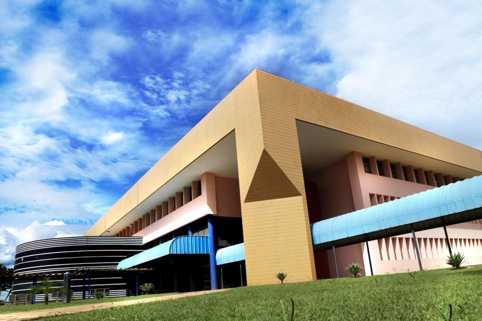

DESCRIÇÃO
O Bloco K da Universidade Católica de Brasília (UCB), situado no campus de Taguatinga, é um
espaço voltado principalmente para aulas práticas e atividades técnicas. Ele atende, em
especial, aos cursos das áreas da saúde, ciências exatas e engenharias, como Biomedicina,
Enfermagem, Nutrição, Engenharia Civil, entre outros. O prédio abriga laboratórios modernos e
bem equipados, que permitem aos estudantes aplicar na prática os conhecimentos adquiridos em
sala de aula.
Os laboratórios do Bloco K são utilizados para experimentos, projetos de pesquisa, atividades
extensionistas e avaliações práticas. Além disso, o bloco conta com salas específicas para
disciplinas técnicas que exigem estrutura diferenciada, como microscopia, anatomia, química e
física.
Mesmo sendo um espaço mais técnico e voltado para práticas laboratoriais, o Bloco K está
localizado em uma área de fácil acesso dentro do campus e próximo a outros blocos acadêmicos e
de convivência. Ele desempenha um papel essencial na formação profissional dos alunos,
oferecendo uma estrutura adequada para o desenvolvimento de habilidades práticas e científicas.
SALAS E DEPARTAMENTOS
- TÉRREO: K001 - K099 Sendo: K006 - Laboratório Ensino e Prática de Empreendedorismo (LEPE), K015 - Laboratório de Informática, K017 - Conex, K024 - Centro Acadêmico de Letras e Biomedicina, K026 - Colabid, K032 - Proade, K033 - Laboratório de Informática, Contendo também um Auditório.
- 1º ANDAR: K100 - K199 Sendo: K124 - Laboratório de Estudos da Linguagem, K125 - Laboratório de Bioinformática e Também uma Capela.
- 2° ANDAR: K200 - K299 Sendo: K208 - CAU Curso de Arquitetura e urbanismo, K209 - PET Civil, K211 - Núcleo de Simulação, K212 - Laboratório de Comunicação e Jornalismo, K243 - CANUT UCB, K257 e K258 - Laboratório de Fotografia, K259 - Laboratório de TV, K262 - Matriz Comunicação, K263 - Laboratório de Comunicação, K264 - Laboratório de Rádio, Lá estão também Direção do Curso de Economia, Direção do Curso de Ciências Contábeis, Direção do Curso de Relações Internacionais e a Direção do curso de Comunicação Social.